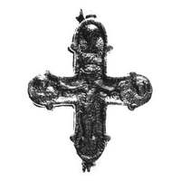
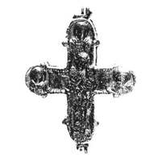

Catalog › CE-0728 · KOR2003-II.1.1.108
Encolpion întreg, relief jos pe față bogat decorat cu crestături, relief înalt pe revers
sec. XIII (1201–1300) · Sevastopol (Chersonesos), Crimeea, Ucraina · Ermitajul de Stat (GE), Sankt Petersburg, inv. Х 220
double-sided reliquary cross (enkolpion), aramă; c. XIII (1201–1300); found at Sevastopol (Chersonesos), Crimeea, Ucraina; kept at Ermitajul de Stat (GE), Sankt Petersburg.




Identificare
- Categorie
- Encolpion bivalv (relicvar)
- Material
- Aramă
- Tehnică
- Turnare în relief
- Stare
- Întreagă
- Dimensiuni
- Î 80 × L 70 mm
Iconografie
- Descriere avers
- Relieful valvei de față este jos și bogat decorat cu crestături pe jumătate șterse.
- Descriere revers
- Pe valva de revers, balamalele de sus din stânga și de jos pierdute; reliefurile sunt în mod tradițional înalte și nu sunt supraîncărcate cu decor.
Datare și atribuire
- Datare
- sec. XIII (1201–1300)
- Centru
- Necunoscut
- Tipologie
- Korzukhina–Peskova 2003, tip II 1 1
Descoperire
- Localitate
- Sevastopol (Chersonesos)
- Regiune
- Crimeea
- Țară
- Ucraina
- Context
- Necunoscut
Păstrare și referințe
- Colecție
- Ermitajul de Stat (GE), Sankt Petersburg
- Nr. inventar
- Х 220
- Bibliografie
- G. F. Korzukhina, A. A. Peskova, Древнерусские энколпионы. Нагрудные кресты-реликварии XI–XIII вв., Sankt-Petersburg, 2003 [Korzukhina–Peskova 2003], p. 73, cat. nr. II 1 1/108, reprodusă la Табл. 28 (planșe, p. 270). Bibliografie citată în sursă: Корзухина, архив ф. 77, д. 16, л. 2.
- Figura
- Табл. 28
- Planșe
- Korzukhina–Peskova 2003, Табл. 28 (planșă fără paginație proprie în PDF; p. 270 tipărită)
- Observații
- Datare după Peskova: sec. XIII. Coordonate: nu sunt date în sursă.
Citare: Corpus Encolpiorum, CE-0728, Encolpion întreg, relief jos pe față bogat decorat cu crestături, relief înalt pe revers, --root/piese/KOR2003-II.1.1.108/ (accesat 2026-10-17).